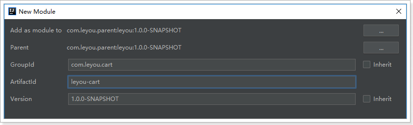
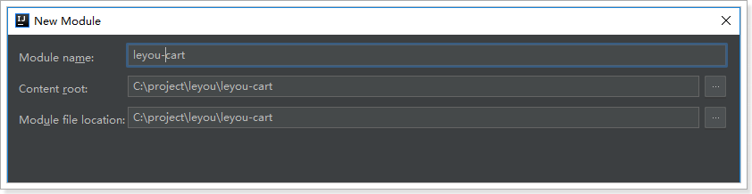
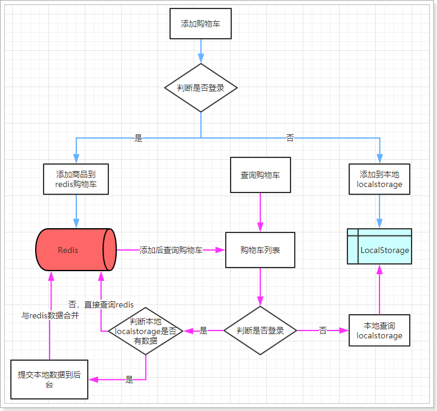
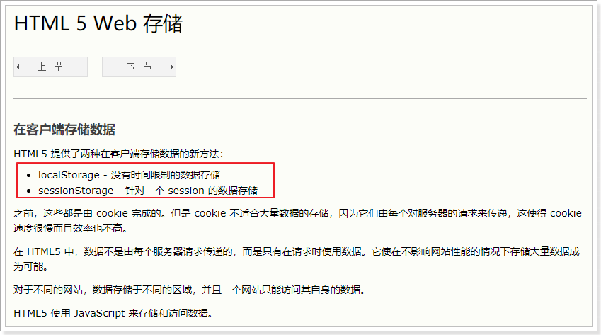
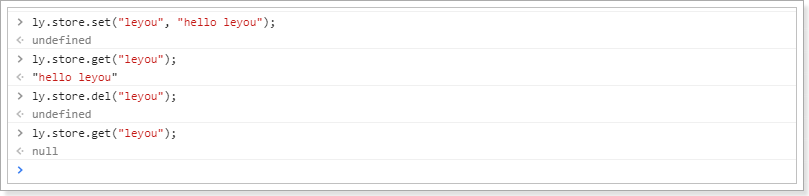
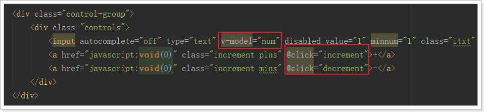
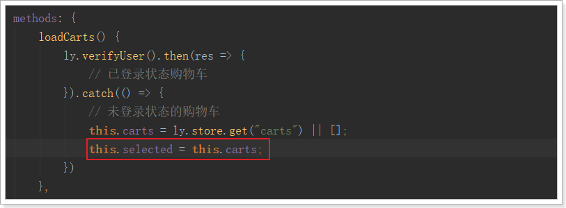
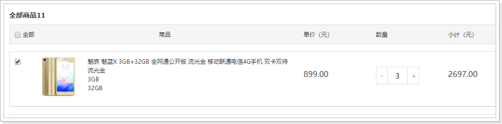
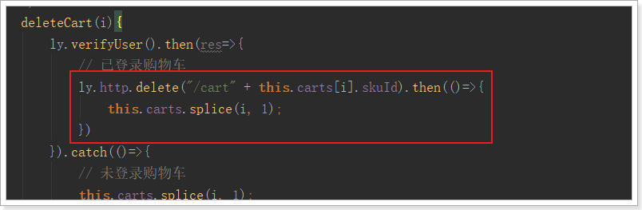

主要解决的问题是：
1.实现未登录状态的购物车
2.实现登陆状态下的购物车
1.搭建购物车服务
1.1.创建module


1.2.pom依赖
<?xml version="1.0" encoding="UTF-8"?>
<project xmlns="http://maven.apache.org/POM/4.0.0"
xmlns:xsi="http://www.w3.org/2001/XMLSchema-instance"
xsi:schemaLocation="http://maven.apache.org/POM/4.0.0 http://maven.apache.org/xsd/maven-4.0.0.xsd">
<parent>
<artifactId>leyou</artifactId>
<groupId>com.leyou.parent</groupId>
<version>1.0.0-SNAPSHOT</version>
</parent>
<modelVersion>4.0.0</modelVersion>
<groupId>com.leyou.service</groupId>
<artifactId>ly-cart</artifactId>
<version>1.0.0-SNAPSHOT</version>
<dependencies>
<dependency>
<groupId>org.springframework.boot</groupId>
<artifactId>spring-boot-starter-web</artifactId>
</dependency>
<dependency>
<groupId>org.springframework.cloud</groupId>
<artifactId>spring-cloud-starter-netflix-eureka-client</artifactId>
</dependency>
<dependency>
<groupId>org.springframework.cloud</groupId>
<artifactId>spring-cloud-starter-openfeign</artifactId>
</dependency>
<dependency>
<groupId>org.springframework.boot</groupId>
<artifactId>spring-boot-starter-data-redis</artifactId>
</dependency>
</dependencies>
</project>
1.3.配置文件
server:
port: 8088
spring:
application:
name: cart-service
redis:
host: 192.168.56.101
eureka:
client:
service-url:
defaultZone: http://127.0.0.1:10086/eureka
registry-fetch-interval-seconds: 10
instance:
lease-renewal-interval-in-seconds: 5
lease-expiration-duration-in-seconds: 15
1.4.启动类
@SpringBootApplication
@EnableDiscoveryClient
@EnableFeignClients
public class LeyouCartApplication {
public static void main(String[] args) {
SpringApplication.run(LeyouCartApplication.class, args);
}
}
2.购物车功能分析
2.1.需求
需求描述：
- 用户可以在登录状态下将商品添加到购物车
- 放入数据库
- mongodb
- 放入redis（采用）
- 用户可以在未登录状态下将商品添加到购物车
- 放入localstorage
- cookie
- webSQL
- 用户可以使用购物车一起结算下单
- 用户可以查询自己的购物车
- 用户可以在购物车中修改购买商品的数量。
- 用户可以在购物车中删除商品。
- 在购物车中展示商品优惠信息
- 提示购物车商品价格变化
2.2.流程图

这幅图主要描述了两个功能：新增商品到购物车、查询购物车。
新增商品：
- 判断是否登录
- 是：则添加商品到后台Redis中
- 否：则添加商品到本地的Localstorage
无论哪种新增，完成后都需要查询购物车列表：
- 判断是否登录
- 否：直接查询localstorage中数据并展示
- 是：已登录，则需要先看本地是否有数据，
- 有：需要提交到后台添加到redis，合并数据，而后查询
- 否：直接去后台查询redis，而后返回
3.未登录购物车
3.1.准备
3.1.1购物车的数据结构
首先分析一下未登录购物车的数据结构。
我们看下页面展示需要什么数据：

因此每一个购物车信息，都是一个对象，包含：
{
skuId:2131241,
title:"小米6",
image:"",
price:190000,
num:1,
ownSpec:"{"机身颜色":"陶瓷黑尊享版","内存":"6GB","机身存储":"128GB"}"
}
另外，购物车中不止一条数据，因此最终会是对象的数组。即：
[
{...},{...},{...}
]
3.1.2.web本地存储
知道了数据结构，下一个问题，就是如何保存购物车数据。前面我们分析过，可以使用Localstorage来实现。Localstorage是web本地存储的一种，那么，什么是web本地存储呢？
什么是web本地存储？

web本地存储主要有两种方式：
- LocalStorage：localStorage 方法存储的数据没有时间限制。第二天、第二周或下一年之后，数据依然可用。
- SessionStorage：sessionStorage 方法针对一个 session 进行数据存储。当用户关闭浏览器窗口后，数据会被删除。
LocalStorage的用法
语法非常简单：

localStorage.setItem("key","value"); // 存储数据
localStorage.getItem("key"); // 获取数据
localStorage.removeItem("key"); // 删除数据
注意：localStorage和SessionStorage都只能保存字符串。
不过，在我们的common.js中，已经对localStorage进行了简单的封装：

示例：

3.1.3.获取num
添加购物车需要知道购物的数量，所以我们需要获取数量大小。我们在Vue中定义num，保存数量：

然后将num与页面的input框绑定，同时给+和-的按钮绑定事件：

编写方法：

3.2.添加购物车
3.2.1.点击事件
我们看下商品详情页：

现在点击加入购物车会跳转到购物车成功页面。
不过我们不这么做，我们绑定点击事件，然后实现添加购物车功能。

addCart方法中判断用户的登录状态：
addCart(){
ly.http.get("/auth/verify").then(res=>{
// 已登录发送信息到后台，保存到redis中
}).catch(()=>{
// 未登录保存在浏览器本地的localStorage中
})
}
3.2.2.获取数量，添加购物车
addCart(){
ly.verifyUser().then(res=>{
// 已登录发送信息到后台，保存到redis中
}).catch(()=>{
// 未登录保存在浏览器本地的localStorage中
// 1、查询本地购物车
let carts = ly.store.get("carts") || [];
let cart = carts.find(c=>c.skuId===this.sku.id);
// 2、判断是否存在
if (cart) {
// 3、存在更新数量
cart.num += this.num;
} else {
// 4、不存在，新增
cart = {
skuId: this.sku.id,
title: this.sku.title,
price: this.sku.price,
image: this.sku.images,
num: this.num,
ownSpec: this.ownSpec
}
carts.push(cart);
}
// 把carts写回localstorage
ly.store.set("carts", carts);
// 跳转
window.location.href = "http://www.leyou.com/cart.html";
});
}
结果：

添加完成后，页面会跳转到购物车结算页面：cart.html
3.3.查询购物车
3.3.1.校验用户登录
因为会多次校验用户登录状态，因此我们封装一个校验的方法：
在common.js中：

在页面item.html中使用该方法：
3.3.2.查询购物车
页面加载时，就应该去查询购物车。
var cartVm = new Vue({
el: "#cartApp",
data: {
ly,
carts: [],// 购物车数据
},
created() {
this.loadCarts();
},
methods: {
loadCarts() {
// 先判断登录状态
ly.verifyUser().then(() => {
// 已登录
}).catch(() => {
// 未登录
this.carts = ly.store.get("carts") || [];
this.selected = this.carts;
})
}
}
components: {
shortcut: () => import("/js/pages/shortcut.js")
}
})
刷新页面，查看控制台Vue实例：
3.5.2.渲染到页面
接下来，我们在页面中展示carts的数据：

要注意，价格的展示需要进行格式化，这里使用的是我们在common.js中定义的formatPrice方法
效果：
3.6.修改数量
我们给页面的 + 和 -绑定点击事件，修改num 的值：

两个事件：
increment(c) {
c.num++;
ly.verifyUser().then(() => {
// TODO 已登录，向后台发起请求
}).catch(() => {
// 未登录，直接操作本地数据
ly.store.set("carts", this.carts);
})
},
decrement(c) {
if (c.num <= 1) {
return;
}
c.num--;
ly.verifyUser().then(() => {
// TODO 已登录，向后台发起请求
}).catch(() => {
// 未登录，直接操作本地数据
ly.store.set("carts", this.carts);
})
}
3.7.删除商品
给删除按钮绑定事件：

点击事件中删除商品：
deleteCart(i){
ly.verifyUser().then(res=>{
// TODO，已登录购物车
}).catch(()=>{
// 未登录购物车
this.carts.splice(i, 1);
ly.store.set("carts", this.carts);
})
}
3.8.选中商品
在页面中，每个购物车商品左侧，都有一个复选框，用户可以选择部分商品进行下单，而不一定是全部：

我们定义一个变量，记录所有被选中的商品：
3.8.1.选中一个
我们给商品前面的复选框与selected绑定，并且指定其值为当前购物车商品：
3.8.2.初始化全选
我们在加载完成购物车查询后，初始化全选：

3.8.3.总价格
然后编写一个计算属性，计算出选中商品总价格：
computed: {
totalPrice() {
return ly.formatPrice(this.selected.reduce((c1, c2) => c1 + c2.num * c2.price, 0));
}
}
在页面中展示总价格：

效果：

4.已登录购物车
接下来，我们完成已登录购物车。
在刚才的未登录购物车编写时，我们已经预留好了编写代码的位置，逻辑也基本一致。
4.1.添加登录校验
购物车系统只负责登录状态的购物车处理，因此需要添加登录校验，我们通过JWT鉴权即可实现。
4.1.1.引入JWT相关依赖
我们引入之前写的鉴权工具：leyou-auth-common
<dependency>
<groupId>com.leyou.auth</groupId>
<artifactId>leyou-auth-common</artifactId>
<version>1.0.0-SNAPSHOT</version>
</dependency>
4.1.2.配置公钥
leyou:
jwt:
pubKeyPath: C:/tmp/rsa/rsa.pub # 公钥地址
cookieName: LY_TOKEN # cookie的名称
4.1.3.加载公钥

代码：
@ConfigurationProperties(prefix = "leyou.jwt")
public class JwtProperties {
private String pubKeyPath;// 公钥
private PublicKey publicKey; // 公钥
private String cookieName;
private static final Logger logger = LoggerFactory.getLogger(JwtProperties.class);
@PostConstruct
public void init(){
try {
// 获取公钥和私钥
this.publicKey = RsaUtils.getPublicKey(pubKeyPath);
} catch (Exception e) {
logger.error("初始化公钥失败！", e);
throw new RuntimeException();
}
}
public String getPubKeyPath() {
return pubKeyPath;
}
public void setPubKeyPath(String pubKeyPath) {
this.pubKeyPath = pubKeyPath;
}
public PublicKey getPublicKey() {
return publicKey;
}
public void setPublicKey(PublicKey publicKey) {
this.publicKey = publicKey;
}
public String getCookieName() {
return cookieName;
}
public void setCookieName(String cookieName) {
this.cookieName = cookieName;
}
}
4.1.4.编写拦截器
因为很多接口都需要进行登录，我们直接编写SpringMVC拦截器，进行统一登录校验。同时，我们还要把解析得到的用户信息保存起来，以便后续的接口可以使用。

代码：
public class LoginInterceptor extends HandlerInterceptorAdapter {
private JwtProperties jwtProperties;
// 定义一个线程域，存放登录用户
private static final ThreadLocal<UserInfo> tl = new ThreadLocal<>();
public LoginInterceptor(JwtProperties jwtProperties) {
this.jwtProperties = jwtProperties;
}
@Override
public boolean preHandle(HttpServletRequest request, HttpServletResponse response, Object handler) throws Exception {
// 查询token
String token = CookieUtils.getCookieValue(request, "LY_TOKEN");
if (StringUtils.isBlank(token)) {
// 未登录,返回401
response.setStatus(HttpStatus.UNAUTHORIZED.value());
return false;
}
// 有token，查询用户信息
try {
// 解析成功，证明已经登录
UserInfo user = JwtUtils.getInfoFromToken(token, jwtProperties.getPublicKey());
// 放入线程域
tl.set(user);
return true;
} catch (Exception e){
// 抛出异常，证明未登录,返回401
response.setStatus(HttpStatus.UNAUTHORIZED.value());
return false;
}
}
@Override
public void afterCompletion(HttpServletRequest request, HttpServletResponse response, Object handler, Exception ex) throws Exception {
tl.remove();
}
public static UserInfo getLoginUser() {
return tl.get();
}
}
注意：
- 这里我们使用了
ThreadLocal来存储查询到的用户信息，线程内共享，因此请求到达Controller后可以共享User - 并且对外提供了静态的方法：
getLoginUser()来获取User信息
4.1.5.配置拦截器
配置SpringMVC，使过滤器生效：

@Configuration
@EnableConfigurationProperties(JwtProperties.class)
public class MvcConfig implements WebMvcConfigurer {
@Autowired
private JwtProperties jwtProperties;
@Bean
public LoginInterceptor loginInterceptor() {
return new LoginInterceptor(jwtProperties);
}
@Override
public void addInterceptors(InterceptorRegistry registry) {
registry.addInterceptor(loginInterceptor()).addPathPatterns("/**");
}
}
4.2.后台购物车设计
当用户登录时，我们需要把购物车数据保存到后台，可以选择保存在数据库。但是购物车是一个读写频率很高的数据。因此我们这里选择读写效率比较高的Redis作为购物车存储。
Redis有5种不同数据结构，这里选择哪一种比较合适呢？Map<String, List
- 首先不同用户应该有独立的购物车，因此购物车应该以用户的作为key来存储，Value是用户的所有购物车信息。这样看来基本的
k-v结构就可以了。 - 但是，我们对购物车中的商品进行增、删、改操作，基本都需要根据商品id进行判断，为了方便后期处理，我们的购物车也应该是
k-v结构，key是商品id，value才是这个商品的购物车信息。
综上所述，我们的购物车结构是一个双层Map：Map<String,Map<String,String>>
- 第一层Map，Key是用户id
- 第二层Map，Key是购物车中商品id，值是购物车数据
实体类：
public class Cart {
private Long userId;// 用户id
private Long skuId;// 商品id
private String title;// 标题
private String image;// 图片
private Long price;// 加入购物车时的价格
private Integer num;// 购买数量
private String ownSpec;// 商品规格参数
public Long getUserId() {
return userId;
}
public void setUserId(Long userId) {
this.userId = userId;
}
public Long getSkuId() {
return skuId;
}
public void setSkuId(Long skuId) {
this.skuId = skuId;
}
public String getTitle() {
return title;
}
public void setTitle(String title) {
this.title = title;
}
public String getImage() {
return image;
}
public void setImage(String image) {
this.image = image;
}
public Long getPrice() {
return price;
}
public void setPrice(Long price) {
this.price = price;
}
public Integer getNum() {
return num;
}
public void setNum(Integer num) {
this.num = num;
}
public String getOwnSpec() {
return ownSpec;
}
public void setOwnSpec(String ownSpec) {
this.ownSpec = ownSpec;
}
}
4.3.添加商品到购物车
4.3.1.页面发起请求
已登录情况下，向后台添加购物车：

ly.http.post("/cart", {skuId: this.sku.id, num: this.num}).then(res=>{
window.location = "http://www.leyou.com/cart.html";
})
这里发起的是Json请求。那么我们后台也要以json接收。
4.3.2.编写controller
先分析一下：
- 请求方式：新增，肯定是Post
- 请求路径：/cart ，这个其实是Zuul路由的路径，我们可以不管
- 请求参数：Json对象，包含skuId和num属性
- 返回结果：无
@Controller
public class CartController {
@Autowired
private CartService cartService;
/**
* 添加购物车
*
* @return
*/
@PostMapping
public ResponseEntity<Void> addCart(@RequestBody Cart cart) {
this.cartService.addCart(cart);
return ResponseEntity.ok().build();
}
}
在leyou-gateway中添加路由配置：
4.3.3.CartService
这里我们不访问数据库，而是直接操作Redis。基本思路：
- 先查询之前的购物车数据
- 判断要添加的商品是否存在
- 存在：则直接修改数量后写回Redis
- 不存在：新建一条数据，然后写入Redis
代码：
@Service
public class CartService {
@Autowired
private StringRedisTemplate redisTemplate;
@Autowired
private GoodsClient goodsClient;
static final String KEY_PREFIX = "leyou:cart:uid:";
static final Logger logger = LoggerFactory.getLogger(CartService.class);
public void addCart(Cart cart) {
// 获取登录用户
UserInfo user = LoginInterceptor.getLoginUser();
// Redis的key
String key = KEY_PREFIX + user.getId();
// 获取hash操作对象
BoundHashOperations<String, Object, Object> hashOps = this.redisTemplate.boundHashOps(key);
// 查询是否存在
Long skuId = cart.getSkuId();
Integer num = cart.getNum();
Boolean boo = hashOps.hasKey(skuId.toString());
if (boo) {
// 存在，获取购物车数据
String json = hashOps.get(skuId.toString()).toString();
cart = JsonUtils.parse(json, Cart.class);
// 修改购物车数量
cart.setNum(cart.getNum() + num);
} else {
// 不存在，新增购物车数据
cart.setUserId(user.getId());
// 其它商品信息，需要查询商品服务
Sku sku = this.goodsClient.querySkuById(skuId);
cart.setImage(StringUtils.isBlank(sku.getImages()) ? "" : StringUtils.split(sku.getImages(), ",")[0]);
cart.setPrice(sku.getPrice());
cart.setTitle(sku.getTitle());
cart.setOwnSpec(sku.getOwnSpec());
}
// 将购物车数据写入redis
hashOps.put(cart.getSkuId().toString(), JsonUtils.serialize(cart));
}
}
需要引入leyou-item-interface依赖：
<dependency>
<groupId>com.leyou.item</groupId>
<artifactId>leyou-item-interface</artifactId>
<version>1.0.0-SNAPSHOT</version>
</dependency>
4.3.4.GoodClient
参照搜索工程，添加GoodClient，提供根据id查询sku的接口：

@FeignClient("item-service")
public interface GoodsClient extends GoodsApi {
}
在leyou-item-service中的GoodsController添加方法：
@GetMapping("sku/{id}")
public ResponseEntity<Sku> querySkuById(@PathVariable("id")Long id){
Sku sku = this.goodsService.querySkuById(id);
if (sku == null){
return new ResponseEntity<>(HttpStatus.NOT_FOUND);
}
return ResponseEntity.ok(sku);
}
在leyou-item-service中的GoodsService添加方法：
public Sku querySkuById(Long id) {
return this.skuMapper.selectByPrimaryKey(id);
}
4.3.5.结果

4.4.查询购物车
4.4.1.页面发起请求
购物车页面：cart.html

4.4.2.后台实现
Controller
/**
* 查询购物车列表
*
* @return
*/
@GetMapping
public ResponseEntity<List<Cart>> queryCartList() {
List<Cart> carts = this.cartService.queryCartList();
if (carts == null) {
return ResponseEntity.status(HttpStatus.NOT_FOUND).body(null);
}
return ResponseEntity.ok(carts);
}
Service
public List<Cart> queryCartList() {
// 获取登录用户
UserInfo user = LoginInterceptor.getLoginUser();
// 判断是否存在购物车
String key = KEY_PREFIX + user.getId();
if(!this.redisTemplate.hasKey(key)){
// 不存在，直接返回
return null;
}
BoundHashOperations<String, Object, Object> hashOps = this.redisTemplate.boundHashOps(key);
List<Object> carts = hashOps.values();
// 判断是否有数据
if(CollectionUtils.isEmpty(carts)){
return null;
}
// 查询购物车数据
return carts.stream().map(o -> JsonUtils.parse(o.toString(), Cart.class)).collect(Collectors.toList());
}
4.4.3.测试

4.5.修改商品数量
4.5.1.页面发起请求

4.5.2.后台实现
Controller
@PutMapping
public ResponseEntity<Void> updateNum(@RequestBody Cart cart){
this.cartService.updateCarts(cart);
return ResponseEntity.noContent().build();
}
Service
public void updateCarts(Cart cart) {
// 获取登陆信息
UserInfo userInfo = LoginInterceptor.getUserInfo();
String key = LEYOU_CART_KEY + userInfo.getId();
// 获取hash操作对象
BoundHashOperations<String, Object, Object> hashOperations = this.redisTemplate.boundHashOps(key);
// 获取购物车信息
String cartJson = hashOperations.get(cart.getSkuId().toString()).toString();
Cart cart1 = JsonUtils.parse(cartJson, Cart.class);
// 更新数量
cart1.setNum(cart.getNum());
// 写入购物车
hashOperations.put(cart.getSkuId().toString(), JsonUtils.serialize(cart1));
}
4.6.删除购物车商品
4.6.1.页面发起请求

注意：后台成功响应后，要把页面的购物车中数据也删除
4.6.2.后台实现
Controller
@DeleteMapping("{skuId}")
public ResponseEntity<Void> deleteCart(@PathVariable("skuId") String skuId) {
this.cartService.deleteCart(skuId);
return ResponseEntity.ok().build();
}
Service
public void deleteCart(String skuId) {
// 获取登录用户
UserInfo user = LoginInterceptor.getLoginUser();
String key = KEY_PREFIX + user.getId();
BoundHashOperations<String, Object, Object> hashOps = this.redisTemplate.boundHashOps(key);
hashOps.delete(skuId);
}
5.登录后购物车合并
当跳转到购物车页面，查询购物车列表前，需要判断用户登录状态，
- 如果登录：
- 首先检查用户的LocalStorage中是否有购物车信息，
- 如果有，则提交到后台保存，
- 清空LocalStorage
- 如果未登录，直接查询即可